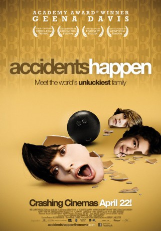

#7724 Accidents Happen
 
 IMDB-Wertung: 6.1 / 10
IMDB-Wertung: 6.1 / 10  Metascore: 0
Metascore: 0 
Seit seiner frühesten Jugend passieren immer mal wieder seltsame Unfälle, wenn Billy Conway in der Nähe ist. Wie zum Beispiel bei der Gartenparty, als sich der Nachbar entflammte, oder beim Autocrash vor acht Jahren, als seine große Schwester starb. Oder letzte Nacht, als Billy beim Kegeln auf der Straße den Vater seines besten Freundes fällte. Von Mutter ist da wenig moralische Unterstützung zu erwarten, die hat ihre eigenen Päckchen zu tragen und könnte mal wieder einen Mann gebrauchen, nach so viel Pech. Billy beschließt, ihr zu helfen.
Jahr: 2009
Dauer: 88 Minuten
FSK: 12
Land: Australien Studio: I-On New MediaTonspuren: DTS - ,
Untertitel:
Auflösung: 1080p (1920x1080) Größe: 8140 MB
Genre: Drama, Komödie
Regisseur: Andrew Lancaster
Drehbuch: Brian Carbee
Soundtrack: Antony Partos
Darsteller:
 Geena Davis als Gloria Conway
Geena Davis als Gloria Conway Harrison Gilbertson als Billy Conway
Harrison Gilbertson als Billy Conway- Harry Cook als Larry Conway
 Joel Tobeck als Ray Conway
Joel Tobeck als Ray Conway- Sebastian Gregory als Doug Post
- Morgan Griffin als Katrina Post
- Erik Thomson als Bob
- Viva Bianca als Becky
 Damien Garvey als Officer Passman
Damien Garvey als Officer Passman- Ivy Latimer als Linda Conway
- Karl Beattie als Young Billy
- Tyler Coppin als Narrator
- Nathan Page als Young Man at Bingo
- Wendy Playfair als Mrs. Smolensky
- Sarah Woods als Dottie Post
- Troy Planet als Tiny Post
- Rebecca Massey als Louise
- Katrina Retallick als Connie Conway-Kellywood
- Jayden Hall als Ricky Kellywood
- Peter Lamb als Officer Barret
- Johnny Xenos als Gene Conway
- Joshua Denyer als Young Gene
- Flynn Colby als Young Larry
- Lachlan Campbell als Young Doug
- John Keightley als Marriage Celebrant
- Brian Carbee als Bingo Caller
- Rosslyn Powell als Bingo Lady
- Sarah Carradine als Nouse Matron
- Alison Gallagher als Young Nurse
- Stephen Radford als Mr. Smolensky
Datei: X:\2009(A-F)\Accidents Happen (2009, FSK12, 1920x1080).mkv seit 15.12.2017
Festplatte: HD 2008(G-Z)-2009(A-F)
 Es gibt insgesamt 91 Filme in der Gruppe '2009(A-F)'
Es gibt insgesamt 91 Filme in der Gruppe '2009(A-F)'